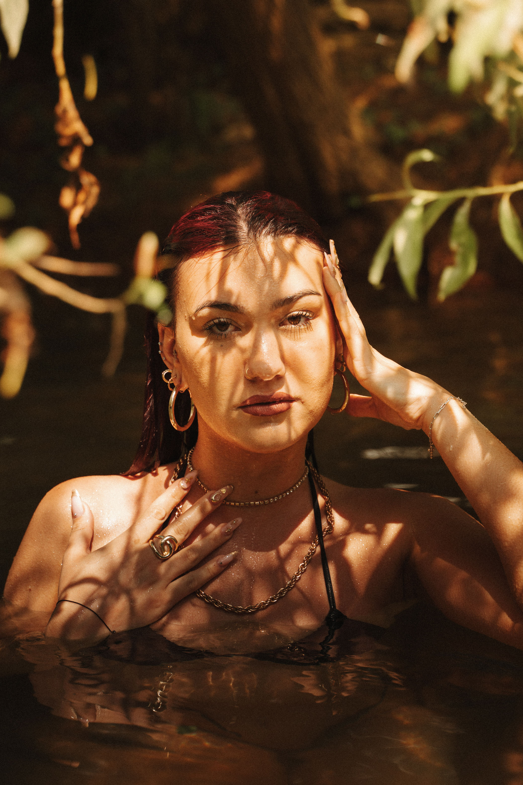
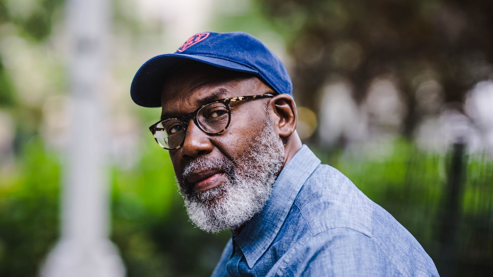
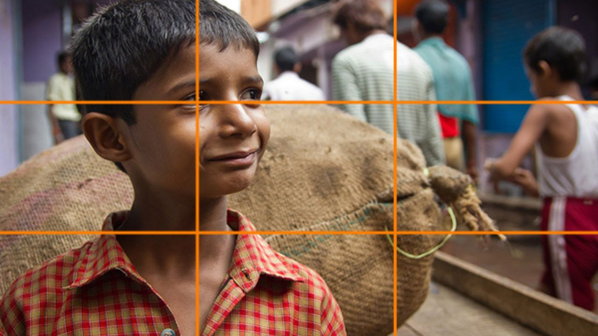
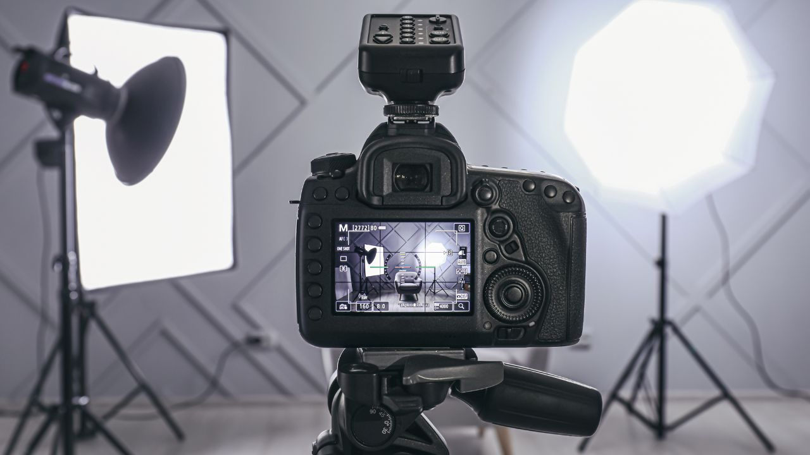
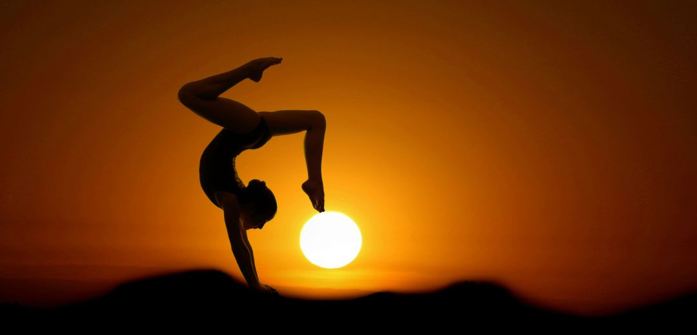
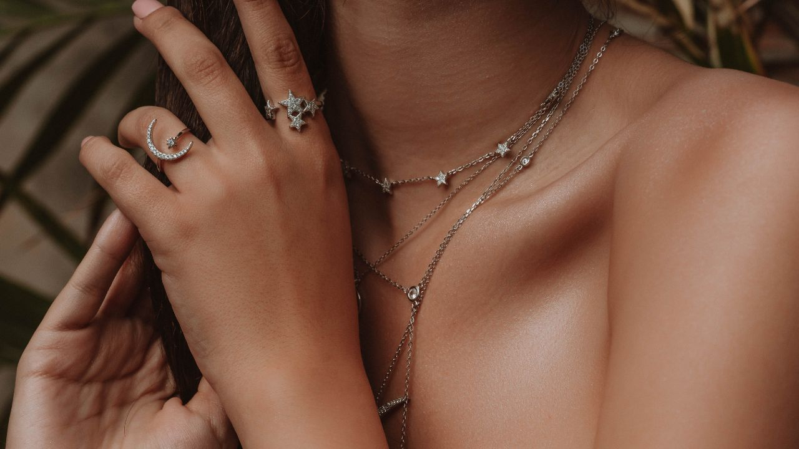
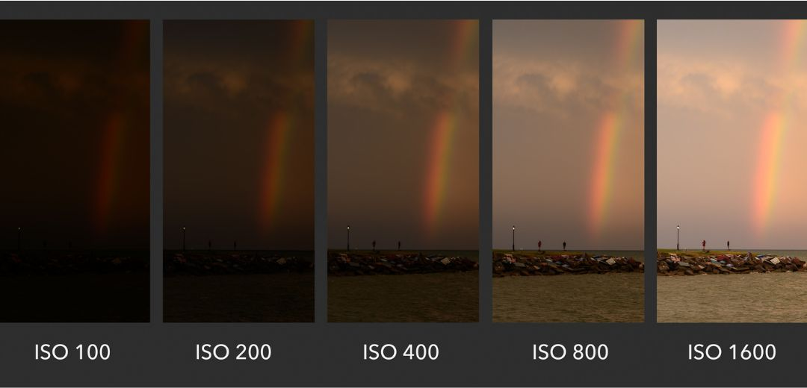

La photographie de portrait est un art délicat qui nécessite à la fois technique et sensibilité. En tant que photographe professionnel, j'ai développé plusieurs techniques pour capturer l'essence et la personnalité de mes sujets. Voici mes meilleures astuces.
1. Comprendre la lumière
La lumière est l'élément le plus crucial en photographie. Apprenez à utiliser la lumière naturelle et artificielle pour créer des effets dramatiques ou doux. L'utilisation de réflecteurs et de diffuseurs peut également aider à contrôler les ombres et à illuminer le visage de votre sujet.

2. Choisir le bon objectif
Un objectif avec une grande ouverture (f/1.8, f/2.8) permet de créer un beau flou d'arrière-plan (bokeh) et de mettre en valeur votre sujet. Les focales entre 85mm et 135mm sont idéales pour les portraits, car elles offrent une perspective flatteuse sans distorsion.

3. Communication avec le sujet
Une bonne communication est essentielle pour mettre à l'aise votre sujet. Établissez un lien de confiance et donnez des instructions claires pour obtenir des expressions naturelles. Encouragez votre sujet à bouger et à changer de position pour capturer différentes facettes de sa personnalité.
4. Composition et cadrage
Utilisez la règle des tiers pour composer vos portraits de manière équilibrée. Jouez avec les lignes directrices, les cadres naturels et les éléments environnants pour ajouter de la profondeur et de l'intérêt à vos images.

5. Post-production
La retouche est une étape importante pour perfectionner vos portraits. Ajustez l'exposition, le contraste et la saturation pour rehausser les couleurs. Utilisez des outils de retouche pour adoucir la peau tout en préservant les détails naturels.

6. Expérimentation
N'ayez pas peur d'expérimenter avec différentes techniques et styles. Essayez des angles de prise de vue inhabituels, des poses créatives et des effets spéciaux pour donner une touche unique à vos portraits.

7. Utilisation des accessoires
Les accessoires peuvent ajouter de la personnalité et du contexte à vos portraits. Chapeaux, foulards, bijoux et autres éléments peuvent compléter la tenue de votre sujet et enrichir la narration visuelle de la photo.

8. Connaître son matériel
Maîtrisez les réglages de votre appareil photo : ISO, vitesse d'obturation, ouverture. Une bonne compréhension de ces paramètres vous permettra de réagir rapidement aux changements de lumière et de conditions de prise de vue.

En maîtrisant ces techniques, vous serez en mesure de créer des portraits captivants qui racontent une histoire et capturent l'âme de vos sujets. La pratique et la passion sont les clés du succès en photographie de portrait.